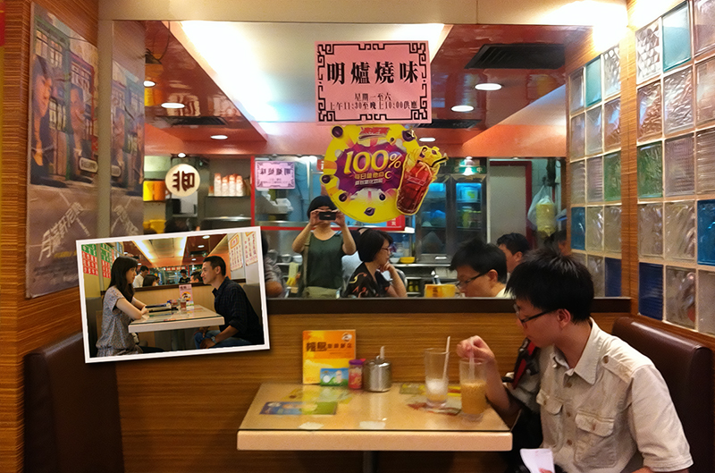

茶餐厅的出现是茶楼与西餐厅的结合。所以和内地新的小资情调茶餐厅不同，香港的很多茶餐厅都是相当平民化，顾客大多是街坊，其中相当一部分是上了年纪的，而并非内地清一色的年轻人。经常能看见餐厅里大叔吃着牛油餐包、喝着奶茶、人手一张马经报。这样的画面会一下击中你记忆中的港片场景。
茶餐厅菜式非常多，经常让人看花了眼。小小一间茶餐厅，随便都能提供几十种菜式。款款都各不相同，但是听起来又好像很像。但你细心的话会发现这只不过是茶餐厅的堆砌大法。牛肉搭配粥粉面饭就是四种食物，猪扒意粉转配红汁，白汁，黑椒汁又多三样，用简单的几种原料就可以搭配出几十上百种食物，方便自己又能满足街坊不同需求。到你觉得选择太多无从下手，他又将不同食物搭配成不同组合,就像《喜剧之王》里周星驰扮演外卖仔要背诵的A餐，B餐，早午晚餐…等等。如果这都不够，茶餐厅还给你提供一点空间自己DIY，加个底什么的。有标准之余又有弹性，平民化消费你还想怎么样呢？
茶餐厅另一大特色就是字多。门口是字，墙上是字，桌面的玻璃下也写着这餐那餐，全部都是字。一般餐厅开张就要思考怎么装修，而茶餐厅就好像不需要，只需将所有的菜牌的字铺满整个店，市井的风格和气质好像就自然出来了。其实整个香港很多地方也是这样，招牌，海报，霓虹灯，感觉都是一堆字堆出来，这些实用的信息反而成为了香港的特色。
在轩尼诗道上我们还找到了《月满轩尼诗》中的檀岛咖啡厅，说是咖啡厅，其实也就是茶餐厅。这要搁在内地，早被改造成小资餐厅了，可这里服务员和吃饭的都是大叔。要不是墙上贴着《月满轩尼诗》的海报，大概很难想象这个小店会成为电影取景地。

你和我，缩入卡位，声音是我们的保护罩。